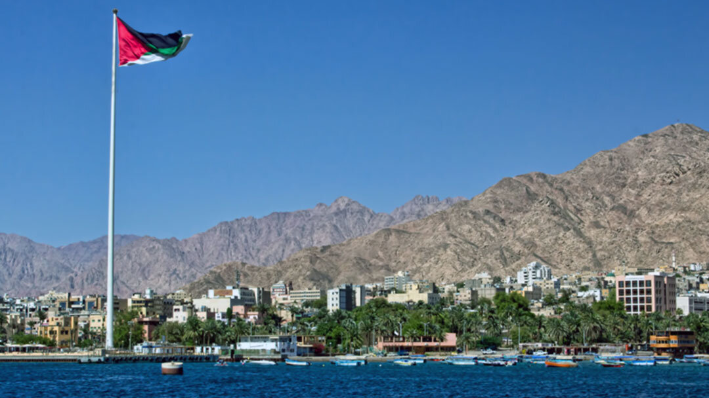

Aqaba is a vibrant coastal city in southern Jordan, situated on the shores of the Red Sea. Known for its sunny weather, crystal-clear waters, and breathtaking coral reefs, Aqaba is a popular destination for both tourists and locals alike. Whether you’re looking to relax on the beach, explore marine life, or enjoy the scenic views of the desert and sea, Aqaba offers an unforgettable experience.
Aqaba is not just a beach city; it’s a hub of historical significance. The city’s strategic location at the crossroads of Jordan, Israel, Egypt, and Saudi Arabia has shaped its cultural richness. With its combination of natural beauty and historical landmarks, Aqaba remains a key part of Jordan’s charm, offering something for everyone.
